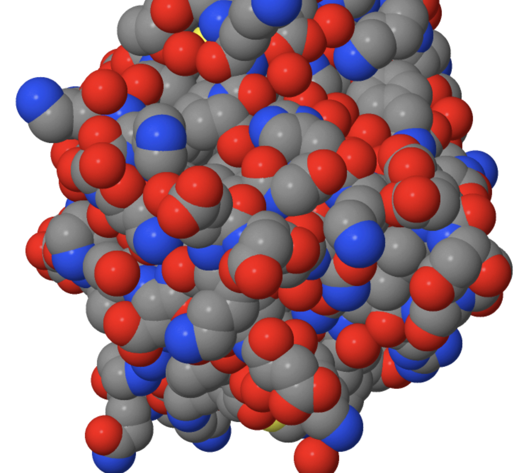

Directions: This test consists of a only fill-in answer responses. Please answer directly in the answer boxes. Remember that brevity is key.
Point values will be stated in parentheses. Tiebreakers will be indicated with a TB.
On the chance that there is a tie that goes beyond these indicated questions, the longest consecutive streak from the first question onward will determine the winner.
The first tiebreaker is to type a smiley face next to your name at the bottom when deciding to submit, just to see if you read this far.
If you take the test without a cheatsheet, you will recieve a 30% bonus. If you choose to proceed with this route, let the test proctor know, give them your cheatsheet (if you have one) and have them initial below in the textbox.
If you have any questions, please feel free to contact me at derekli@uchicago.edu
-
In less than one sentence each, name and briefly describe the four levels of protein structure. (4)
-
What is the most basic level of protein structure? (1)
-
What is the most complex level of protein structure? (1)
-
What is the monomer of a protein. (1)
-
Name the 3 main structural classifications of proteins. Give an example of each. (3)
-
What is a gene? What are the basic elements of any protein-coding gene's structure? (2.5)
-
Proteins are usually folded at low temperature (T < T_m, the so-called “melting
temperature”) and unfolded at high temperature (T > T_m). During folding, hydrophobic amino
acid side chains are removed from solvent and buried inside the protein. The questions below
refer to the folding reaction written as follows:
Unfolded Protein ⇌ Folded Protein
What is the sign of ΔG for this reaction at T < T_m? (1)
What is the sign of ΔG for this reaction at T > T_m? (1)
-
Would enzymes have an impact on ΔG for this reaction? Yes or No. (1)
-
Why or why not? (1)
-
The next three questions refer to the following:
(A) Reduction
(B) Hydrolysis
(C)) Group transfer
(D) Isomerization
(E) Oxidation
Questions:
Cleavage of a peptide bond (1)
Phosphorylation of a serine residue on a protein (1)
Formation of disulfide bonds between cysteines (1)
-
The next four questions refer to the following:
(A) Zinc finger
(B) Acidic domain
(C)) Triple helix
(D) Long terminal repeat (LTR)
(E) Stem-loop
Questions:
A common structural motif found in the DNA binding domains of transciptional activators (1)
A retroviral sequence element (1)
A structural motif in transcriptional activator proteins that interact with proteins in the general transcription apparatus (1)
The structure of a transcriptional attentuator (1)
-
Define denaturation of proteins and list five different ways to denature a protein. (3.5)
-
Offer one example of denaturization from the question above, how would one renature a protein following that form of denaturation? (2)
-
How does denaturation impact each different level of protein structure? (4)
-
What amino acids among the following would you expect to find a) inside, and b) at the surface of a typical globular protein in an aqueous solution of pH 7? (4.5)
Glu, Arg, Val, Phe, Ileu, Asn, Lys, Ser, Thr
-
What does CRISPR stand for? (1)
-
What does Cas stand for? (1)
-
CRISPR-Cas9:bacteria :: __________ : human (1)
-
CRISPR-Cas9:bacteria :: __________ : eukaryotes (1)
-
Describe, in three clearly defined stages, how a bacterial cell uses the
CRISPR-Cas9 system for immunity against an invading bacteriophage. (6)
-
How many classes of Cas systems exist? (1)
-
How many types of Cas systems exist? (1)
-
What is the class and type of Cas9? (2)
-
What is the class and type of Cas12a? (2)
-
What is another name for Cas12a? (1)
-
List two differences between Cas9 and Cas12a? (2)
-
Here is some arbitrary DNA strand.
3' ... gaacccttctcgctaagtcccgcc ... 5'
5' ... cttgggaactgcgattcagggcgg ... 3'
How many PAM sites are present in this stretch of DNA for SpCas9? (1)
-
What is the most common form of PAM for SpCas9? (1)
-
What does PAM stand for? (1)
-
If there was no PAM sequence in bacteria, what would be a consequence? (1)
-
What are the domains of CRISPR and their functions? Try to keep each explanation to one or two sentences. (6)
Back in 2012, a new class of prokaryotic RNA binding proteins called Repeat Associated Mysterious Proteins (RAMPs), was identified.
-
How many steps in the CRISPR immunity pathway are these RAMPs involved in? (1)
-
Name one functional role these RAMPs have in the CRISPR immunity pathway. (1)
-
RAMPs can be classified into 3 families, which Cas family is the largest? (1)
Though this event focuses on CRISPR-Cas9 gene editing, two other forms of gene editing technology are also widely used.
-
Name these two alternative gene editing technologies. (2)
-
Provide 2 advantages CRISPR has to these 2 alternative methods (2).
-
Provide 2 disadvantages CRISPR has to these 2 alternative methods. (2)
These last questions will be formatted as an extended research thought experiment in which
you will think about potential applications of CRISPR technology.
Let's say you work in a lab that studies electrochemical biosensors. The idea behind biosensing technology is to
recognize different biomarkers and based on a threshold concentration to identify specific illnesses. For example, different cancers result in different types of biomarkers to emerge in the bloodstream, where biomarkers can be genes, proteins, DNA and other molecular units.
Current technologies like Western Blot, and ELISA are quite slow and may not be as sensitive compared to other biosensors.
Thus, you and your lab group is trying to incorporate the use of CRIPSR technology to improve biosensing technologies in preventive care.
The primary way biomarker concentration is measured is by the distance of an electrochemical tab from the electrodes on the surface. Generally, the greater concentration of biomarker, the further the tab, the lower the current that travels through the biosensor.
The tab in your experiment will be an ssDNA strand that acts as a hairpin probe. It should be known that from an idealized chemistry perspective,
the ultimate signal gain would be the elimination of the electrochemical signal in the presence of the target, indicating that the removal of the electrochemical tag upon the target recognition is desirable.
The specific way you seek to utilize CRISPR is twofold: first is to improve specificity in identifying the biomarker.
Second, is to improve sensitivity of the biosensor.
-
What characteristic(s) of CRISPR best enables the identification of biomarkers? Why? Think about the premise of CRISPR's own methods of identification. (5)
-
What characteristic(s) of CRISPR would enable better sensitivity (i.e. the sensor is still effective at low levels of biomarker concentration) and why?
Think specifically by "removal of the electrochemical tag". HINT: Answer with regards to some tertiarty structure of CRISPR. (3)
-
Given the following experimental results, does it appear that Cas9 or Cas12a is better for your biosensor? Why? (3)
-
What does DNA stand for? (1)
-
What does RNA stand for? (1)
-
What are the three types of RNA and their functions (3)
-
What bases are present in DNA? Please provide the full names. (2)
-
How are the DNA bases classified? (1)
-
What is the difference between DNA and RNA with regards to bases? (1)
Here is an arbitrary DNA strand.
3' ... caccccgtacaatccaaatgcgca ... 5'
5' ... gtggggcatgttaggtttacgcgt ... 3'
-
What type of strand is the first strand considered? (1)
-
What type of the strand is the second strand considered? (1)
-
If one were to get an RNA strand from this DNA, what would the resulting RNA strand be? (2)
-
What is this process of turning DNA into RNA called? (1)
-
What regulates this process of turning DNA into RNA? (1)
-
From the resulting RNA sequence what would be the encoded peptide sequence? (2)
-
What is this process of turning RNA into a peptide sequence called? (1)
-
What regulates this process of turning RNA into a peptide sequence? (1)
-
What is this process of DNA -> RNA -> Protein considered in molecular biology? (1)
-
What does a nuclease do? (1)
-
A sequence of fifty base pairs of nucleotides contains 33 cytosine bases. How
many adenine bases are there in the sequence? (1)
-
If a bacterium composed of nitrogen 14 was grown in culture that contained
nitrogen 16, would newly synthesised DNA weigh more, less or the same as
original bacterium DNA? (1)
-
Why is the above case true? (Please keep your answer to 1-2 sentences) (1)
-
Explain the idea of "RNA world" in one to two sentences. Then provide one reason to why this is not the case today. (2)
-
Define chirality. (1)
-
How many different chiral forms are there for amino acids? (1)
-
What are they? (1)
-
Explain one difference between the forms? (1)
-
Match the characteristics below with the best matching amino acids. Unless otherwise stated all the amino acids are at physiological pH 7.4.
There are more than one characteristic for many of the amino acids and 22 total answers for 0.5 points each (11). There will be deduction for any additional incorrect answers,
so don't fill the lines with unnecessary characteristics.
1. acidic side chain
2. non-chiral amino acid
3. basic side chain
4. side chain can be modified by adding phosphates
5. involved with disulfide cross links
6. often found in the turns of proteins
7. is converted to tyrosine by hydroxylation
8. has more than one amino group
9. has overall net charge of -1 at pH 8.5
10. only straight or branched hydrocarbons in the side chain
11. polar, non-charged side chain
12. side chain can be modified by adding sugars
13. aromatic side chain
-
What is the only amino acid that is essential because animals cannot synthesize it? (1)
-
What is the only amino acid where the side chain is connected to the protein backbone twice? (1)
-
Which amino acid is an alpha helix terminator? (1)
-
The most common amino acid in beta bend is? (1)
-
List 1 amino acid outside of the standard 20. (1)
-
What are nonessential amino acids? Provide an example. (2)
-
Why can an amino acid act as both an acid and a base? (2)
-
What is the above property called? (1)
-
What is the isoelectric point of an amino acid? (1)
-
What is the isoelectronic point, pI, of each of the following hypothetical amino acids for which you are given their pKa values? (3)
(pKa1 = carboxyl, pKa2 = ammonium, pKa3 = side chain functional group)
(a) pKa1 = 4.0, pKa2 = 8.0
(b) pKa1 = 3.0, pKa2 = 9.0, pKa3 = 4.0
(c) pKa1 = 3.0, pKa2 = 9.0, pKa3 = 8.0
-
Now for each of the following, please give me: its name, its one-letter abbreviation, all relevant pK values, and the net charge you predict it to have at pH 8.5.
Note that there is not necessarily only one correct answer to each of these -- pick one you like! (4 each)
An amino acid which contains an epsilon-amino group.
An amino acid which contains an aromatic side-chain.
An amino acid which contains an alcohol group.
An amino acid which contains an acidic side-chain.
An amino acid which has a pKA for one of its ionizable groups that is near human physiological pH
-
A thought experiment: if instead of 20 different amino acids, proteins were composed of
12 different amino acids, what is the smallest possible codon size in a genetic system with
four different nucleotides? (1)
-
Many biomolecules are derived from amino acid precursors. Name the correct precursor for the
following biomolecules. (4)
Directions: Complete the questions using the built-in JSmol applet.
To access console: Right Click -> Console (not JavaScript Console).
To reload: Right Click -> File -> Load -> Reload.
-
What is the Brookhaven code of this PDB file? (0.5)
-
How many chains are in this PDB file? (0.5)
-
How many groups are in this PDB file? (0.5)
-
How many polymers are in this PDB file? (0.5)
-
How many atoms are there? (0.5)
-
How many bonds are there? (0.5)
-
How many hydrogen bonds are there? (0.5)
-
How many helicies are there? (0.5)
-
How many strands are there? (0.5)
-
How many turns are there? (0.5)
-
How many struts can be added? (0.5)
-
How many water atoms are there? (0.5)
-
How many amino acids are there? (1)
-
What was the experimental method used to determine the structure of this PDB file? (1)
-
What is the best resolution for this PDB file? (1)
-
What is the two-letter element abbreviation corresponding to the metal ion chelated to this metalloenzyme? (1)
-
What is the abbreviation used by the molecular imaging program to identify the inhibitor complexed to this enzyme? (1)
-
How many Tyr sidechains are more than 50% buried in the interior of this enzyme?
Note: Assume that the criterion for being a "buried" Tyr sidechain is that the phenolic oxygen is not exposed to the aqueous environment of the protein. (1)
-
What is the approximate distance (in Å) between the coordinated metal ion and the most distal atom ("farthest away atom") of the bound inhibitor? (1)
Answer with one of the following: 4-4.9, 5-5.9, 6-6.9, 7-7.9, 8-8.9, >9
Some arbitrary questions about Jmol/JSmol modeling. The following questions no longer pertain to the above JSmol instance.
-
What single command would result in the following type of image? (0.5)
-
What single command would result in the following type of image? (0.5)

-
What single command would result in the following type of image? (0.5)

-
What single command would result in the following type of image? (0.5)
-
What single command would result in the following type of image? (0.5)
-
What single command would result in the following type of image? (0.5)
-
What single command would result in the following type of image? (0.5)
-
What single command would result in the following type of image? (0.5)